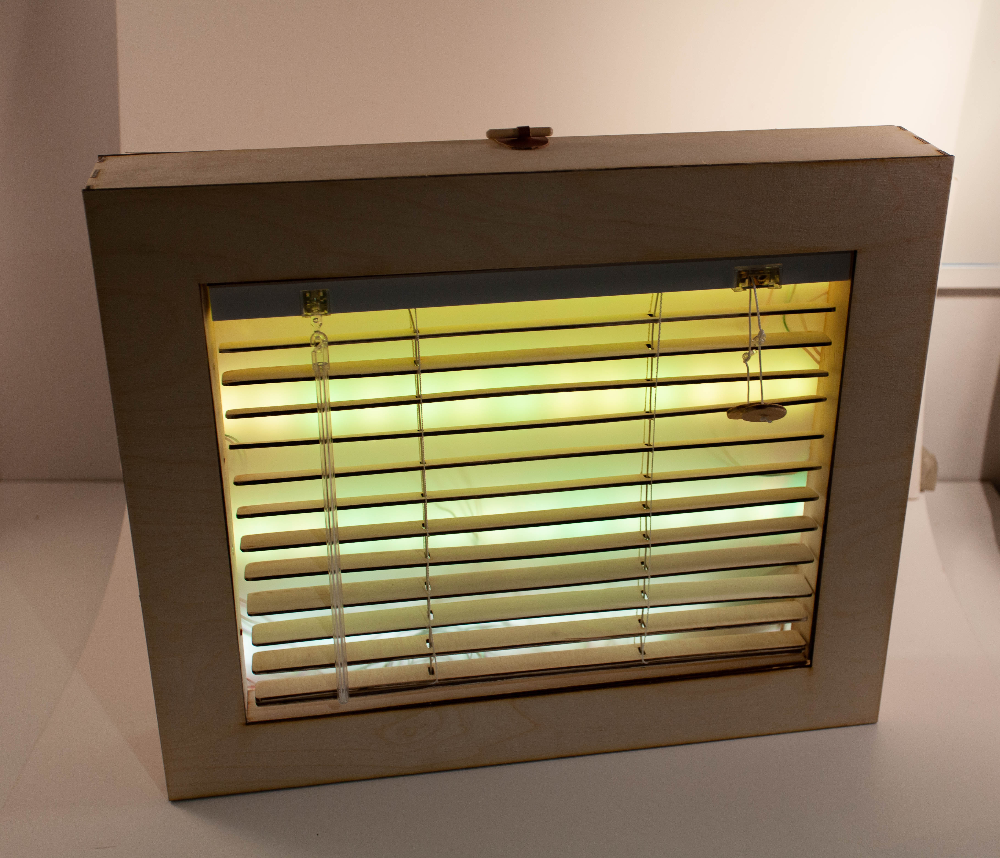
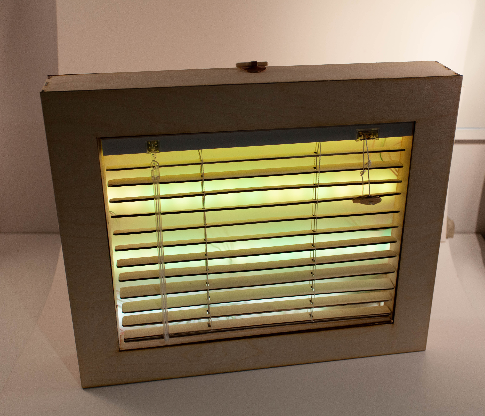

Kjente signifiers i en ny konteks.
Laget av: Brage Westvik Bråten, Live, Kathrine & Ida
I dette prosjektet i kurset tangible interaction fikk vi en uke på å utvikle en prototype som bruker kjente signifiers i en ny kontekst. Gjennom en ideprosess fant vi ut at vi ønsket å bruke et vindu med persienner og gjøre det til et møbel. Ved å vri på vrideren til en persienne slipper man inn mer eller mindre lys. Dette gjør også prototypen. Ved å trekke opp persiennen lyser led stripene på full styrke for å gi mest mulig lys slik man er kjent med fra vanlige persienner.
Lærdom fra kruset
- Rapid Prototyping
- Prototyper som design verktøy
- Utforskning av 'Look and Feel' prototyper
- Tett sammarbeid
- Ukentilig presentasjoner av arbeid og kritikk til arbeidet.


 
